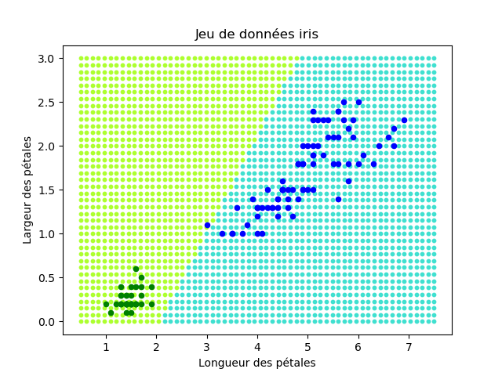
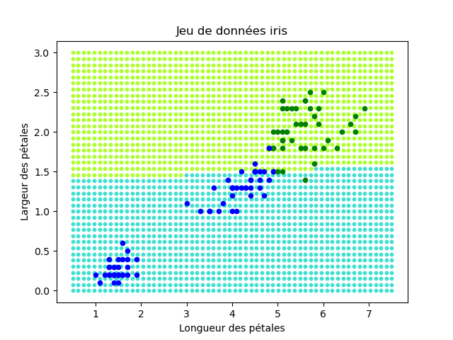
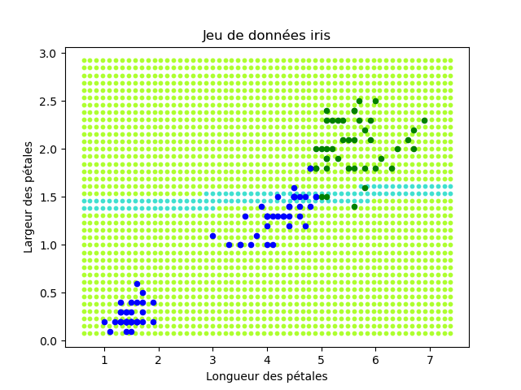

Ce TP est optionnel (mais je vous encourage fortement à le faire).
Il est la suite du TP sur la classification supervisée avec un perceptron. Il faut absolument avoir terminé le TP sur la DGS avant d'aborder celui-ci.
Ce TP étant optionnel, je donne peu d'explications et je vous encourage fortement à réfléchir à ce que vous faites, à avoir des idées et à les tester.
L'objectif de ce TP est d'étudier d'un peu plus près les prédictions réalisées par le perceptron une fois entraîné.
On considère qu'un iris est représenté uniquement par la longueur et la largeur de ses pétales.
Après avoir calculé les poids du perceptron, réaliser une carte des prédictions du perceptron. C'est-à-dire, pour « chaque » point dans le plan correspondant à une longueur de pétale comprise entre 0 et 8 cm et une largeur de pétale comprise entre 0 et 3 cm, calculer la prédiction pour un tel iris et réaliser une représentation graphique. Bien sûr on ne peut pas parcourir tous les points du plan ; on parcourera les points disposés sur une grille, par exemple tous les millimètres.
Pour un perceptron prédisant les Setosa par rapport aux deux autres classes, j'obtiens cette représentation :

Sur cette figure, les exemples d'entraînement sont indiqués par des points plus gros, verts pour les Setosa, bleus pour les autres.
On voit par ailleurs la prédiction réalisée par ce perceptron pour tous les points du domaine : vert clair indique que ce point est prédit comme Setosa, bleu clair indique qu'il est prédit autre (Versicolor ou Virginica).
De même, pour un perceptron prédisant les Virginica par rapport aux deux autres classes, j'obtiens cette représentation :

On s'intéresse maintenant à la sensibilité de la prédiction par rapport à la précision de la mesure des attributs. Toute mesure est accompagnée d'une incertitude. Par exemple, quand on mesure la longueur ou la largeur des pétales, on peut faire une erreur d'un millimètre.
Ici, on étudie les conséquences de cette imprécision sur la prédiction du perceptron.
On va réaliser une carte de sensibilité : comme ci-dessus, pour « chaque » point dans le plan, vous déterminez si la prédiction du perceptron change si on commet une erreur de mesure de m millimètres (prendre m = 1). Et vous réalisez une carte indiquant les zones où une telle erreur entraîne un changement de prédiction, donc les zones où il faut essayer de mesurer les attributs avec une grande précision.
Pour la prédiction de Virginica par rapport aux deux autres classes, j'obtiens cette carte :

Les points bleus indiquent les zones sensibles, c'est-à-dire là où une variation de la longueur ou de la largeur d'1 millimètre modifie la prédiction du perceptron.
Pourquoi la zone de sensibilité a-t-elle cette forme ?
Le source de votre programme doit respecter les points suivants :
Pour finir, vous m'envoyez votre/vos script(s) par email, en mettant votre binôme en cc.